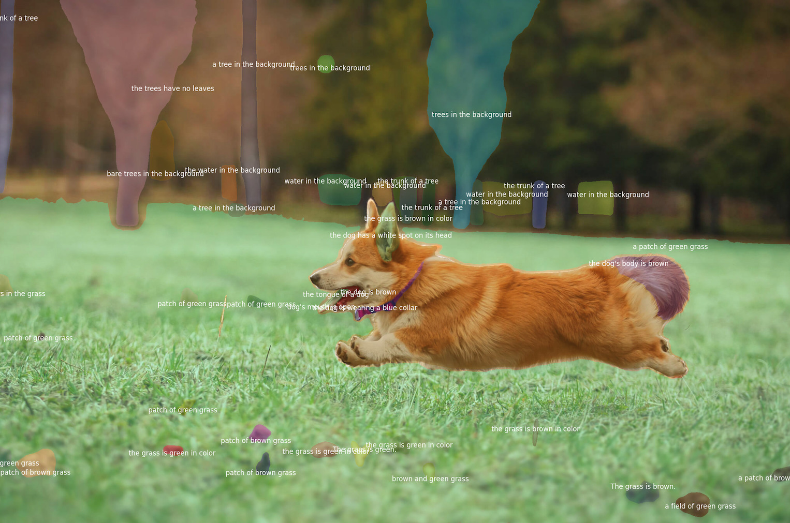
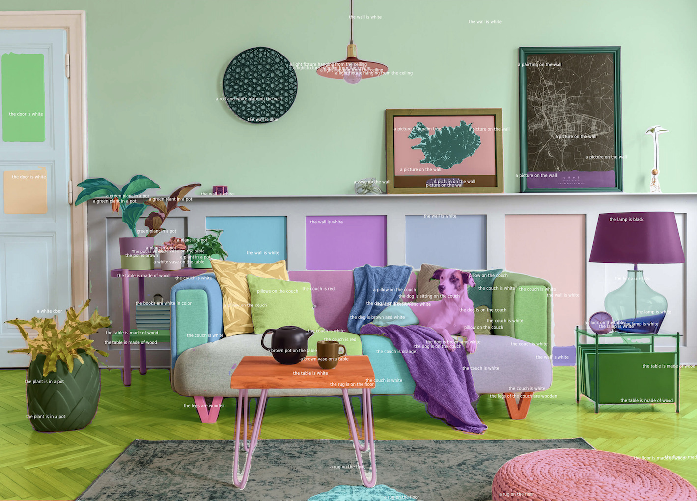

Demo
We provide a gradio demo for SCA with both "prompt mode" and "anything mode" in Gradio Demo. Click for a zoom-in view.






We provide a gradio demo for SCA with both "prompt mode" and "anything mode" in Gradio Demo. Click for a zoom-in view.
We have demonstrated a scalable regional captioning system leveraging the SAM segmentation model and a lightweight feature mixer, pre-trained with weak supervision for enhanced generalization. Despite some limitations, the system shows strong performance and potential for future development.
@misc{xiaoke2023sca,
title={{Segment and Caption Anything}},
author={Xiaoke, Huang and Jianfeng, Wang and Yansong, Tang and Zheng, Zhang and Han, Hu and Jiwen, Lu and Lijuan, Wang and Zicheng, Liu},
journal={arXiv},
volume={abs/2312.00869},
year={2023},
}We thank Yutong Lin, Yiji Cheng and Jingcheng Hu for their generously support and valuable suggestions.
This website is adapted from Nerfies, licensed under a Creative Commons Attribution-ShareAlike 4.0 International License.